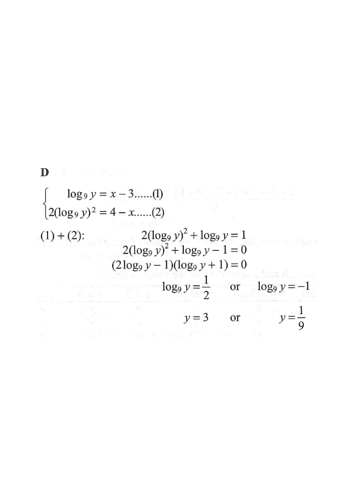

If
\[
\begin{cases}
\log_9 y = x - 3 \\[4pt]
2(\log_9 y)^2 = 4 - x
\end{cases}
\]
then \(y=\)
A.\(-1\) or \(\dfrac{1}{2}\)
B.\(1\) or \(\dfrac{1}{3}\)
C.\(2\) or \(\dfrac{7}{2}\)
D.\(3\) or \(\dfrac{1}{9}\)

Figure (original exam diagram)
Step-by-step solution
1Name the two equations
\[
\log_9 y = x-3 \quad\cdots(1)
\qquad
2(\log_9 y)^2 = 4-x \quad\cdots(2)
\]
Both equations link \(x\) with the same quantity \(\log_9 y\). That shared quantity is the key — treat it as one unknown.
2Eliminate \(x\) by adding (1) and (2)
\[
(1)+(2):\quad 2(\log_9 y)^2+\log_9 y = (4-x)+(x-3)
\]
\[
2(\log_9 y)^2+\log_9 y = 1
\]
Adding removes \(x\) completely (\(x+(-x)=0\)), leaving a single equation in \(\log_9 y\).
3Form a quadratic and factorise
\[
2(\log_9 y)^2+\log_9 y-1 = 0
\]
\[
\bigl(2\log_9 y - 1\bigr)\bigl(\log_9 y + 1\bigr) = 0
\]
Let \(u=\log_9 y\): then \(2u^2+u-1=0\), which factorises as \((2u-1)(u+1)=0\).
4Solve for \(\log_9 y\)
\[
\log_9 y = \frac{1}{2}
\qquad\text{or}\qquad
\log_9 y = -1
\]
Each factor can equal zero. These two values of \(\log_9 y\) give two candidate values of \(y\).
5Convert back to \(y\) using \(y=9^{\log_9 y}\)
\[
\log_9 y=\frac{1}{2}\;\Rightarrow\; y=9^{1/2}=\sqrt{9}=3
\]
\[
\log_9 y=-1\;\Rightarrow\; y=9^{-1}=\frac{1}{9}
\]
By definition \(\log_9 y=k \iff y=9^{k}\). So \(y=\sqrt{9}=3\) or \(y=\dfrac{1}{9}\).
Answer: D — \(y=3\) or \(y=\dfrac{1}{9}\)
Check with (1): if \(y=3\), \(\log_9 3=\tfrac12\), so \(x=\tfrac12+3=\tfrac{7}{2}\).
Then (2) gives \(2(\tfrac12)^2=\tfrac12\) and \(4-\tfrac{7}{2}=\tfrac12\) ✓
If \(y=\tfrac19\), \(\log_9\tfrac19=-1\), so \(x=-1+3=2\).
Then (2) gives \(2(-1)^2=2\) and \(4-2=2\) ✓